WpfAnimation
介绍
这是一个用于WPF开发的动画控件库，其中包含通用动画组件、数值变化动画控件、连续路径动画控件、路径流动动画控件、变形动画控件、粒子动画控件、网格动画控件等多个动画组件
使用动画组件需要添加引用及资源文件
xmlns:ctrl="clr-namespace:IceSky.WpfAnimation.Controls;assembly=IceSky.WpfAnimation"
xmlns:anim="clr-namespace:IceSky.WpfAnimation.GridAnimations;assembly=IceSky.WpfAnimation"
<Window.Resources>
<ResourceDictionary>
<ResourceDictionary.MergedDictionaries>
<ResourceDictionary Source="pack://application:,,,/IceSky.WpfAnimation;component/Generic.xaml"/>
</ResourceDictionary.MergedDictionaries>
</ResourceDictionary>
</Window.Resources>
所有控件的示例代码可以查看以下路径：IceSky.WpfAnimation.Sample
通用动画组件
通用动画组件是对常用动画类型的封装，可以减少动画定义时的代码，支持多个动画的组合，库中包含了大量预定义的动画定义可以直接使用，可以指定动画触发方式
使用方法
添加命名空间
xmlns:cfg="clr-namespace:IceSky.WpfAnimation.Models;assembly=IceSky.WpfAnimation"在Xaml文件中对需要动画的控件增加动画属性，常用基础动画已经添加到资源字典了，可以根据需要使用资源名称
<TextBlock Text="动画示例" cfg:AnimatedElement.Trigger="Loaded">
<cfg:AnimatedElement.Animations>
<cfg:AnimationCollection>
<cfg:AnimationSetting BasedOn="{StaticResource AS_SkewX}" RepeatBehavior="Forever"
AutoReverse="True"/>
</cfg:AnimationCollection>
</cfg:AnimatedElement.Animations>
</TextBlock>
配置参数说明
Trigger：触发方式，支持加载后、鼠标点击、鼠标进入、鼠标离开、鼠标悬停、键盘按下、数据触发等方式
- 鼠标点击方式可以指定鼠标键
- 键盘按下可以指定键盘按键
- 数据触发可以指定触发数据值
鼠标悬停方式会在进入时触发动画，鼠标离开时自动执行反向动画
键盘按下时指定按键的示例代码如下
<Button cfg:AnimatedElement.Trigger="KeyDown" cfg:AnimatedElement.TriggerKey="X" cfg:AnimatedElement.TriggerModifierKeys="Ctrl"/>bool值触发动画示例：
<TextBlock cfg:AnimatedElement.Trigger="DataTrigger" cfg:AnimatedElement.DataTriggerValue="{Binding ElementName=chkPlay,Path=IsChecked}"/>绑定文本触发动画示例：
<Ellipse cfg:AnimatedElement.Trigger="DataTrigger" cfg:AnimatedElement.DataTriggerValue="{Binding ElementName=txtDataTrigger,Path=Text}" cfg:AnimatedElement.TriggerStartValue="start" cfg:AnimatedElement.TriggerStopValue="stop"/>可以使用AnimationCompleted设置动画完成事件，比如：
<Button cfg:AnimatedElement.AnimationCompleted="AnimationCompleted" cfg:AnimatedElement.Trigger="MouseClick"/>AnimationType：动画类型，支持Double、Color、Thickness、Point、CornerRadius等类型
Color类型可以指定形状填充、形状描边、控件前景色、控件背景色和边框颜色，只需使用简单属性名称即可指定，设置时对应的目标属性名称分别是：FillColor、StrokeColor、Background、Foreground、BorderColor
CornerRadius指定值时需要设置一个值或四个值，一个值表示四个圆角半径相同，如果要分别指定必须要四个值，分别表示左上、右上、右下、左下，比如ToValue="0 15 0 0" 表示设置右上角圆角为15，其他方向没有圆角
TargetProperty：目标属性，设置动画改变的目标属性，需要和动画类型相匹配
动画属性支持对Blur和Shadow Effect进行动画，Blur Effect只能对模糊半径进行动画，属性名称为Blur；Shadow Effect可以对模糊半径、不透明度、深度和方向进行动画，属性名称分别为ShadowBlur、ShadowOpacity、ShadowDepth和ShadowDirection
Point类型可以对渐变画刷进行动画，包括LinearGradientBrush的StartPoint和EndPoint，以及RadialGradientBrush的GradientOrigin，对这些进行动画时属性名称需要完整指定，比如Fill.(LinearGradientBrush.StartPoint)、Fill.(LinearGradientBrush.EndPoint)、Fill.(RadialGradientBrush.GradientOrigin)
动画参数：包括FromValue、ToValue、ByValue、Duration（毫秒）、BeginTime（毫秒）、CenterX、CenterY、EasingType、EasingMode、RepeatBehavior、AutoReverse、UseMidSwing
如果需要让RenderTransform的动画基准为元素中心，需要明确指定RenderTransformOrigin=".5 .5"，如果不指定默认值为左上角
UseMidSwing设置为True可以在From和To之间摆动，结束值是From和To的中间值
AnimationSetting可以使用BasedOn进行继承，继承后可以重新设置动画参数
AnimationCollection的子元素可以使用AnimationCollection和AnimationSetting组合，但AnimationCollection不能使用BasedOn进行继承
示例配置
点击展开
FadeIn：
<cfg:AnimationSetting
AnimationType="Double" TargetProperty="Opacity"
FromValue="0" ToValue="1" Duration="1000"/>
FadeOut：
<cfg:AnimationSetting
AnimationType="Double" TargetProperty="Opacity"
FromValue="1" ToValue="0" Duration="1000"/>
FromLeft：
<cfg:AnimationSetting
AnimationType="Double" TargetProperty="X"
FromValue="-100" ToValue="0" Duration="1000"/>
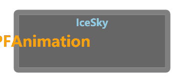
ToRight：
<cfg:AnimationSetting
AnimationType="Double" TargetProperty="X"
FromValue="0" ToValue="100" Duration="1000"/>
FlipX：
<cfg:AnimationSetting
AnimationType="Double" TargetProperty="ScaleX"
FromValue="-1" ToValue="1" Duration="1000"/>
SkewX：
<cfg:AnimationSetting
AnimationType="Double" TargetProperty="AngleX"
FromValue="-30" ToValue="30" Duration="1000"/>
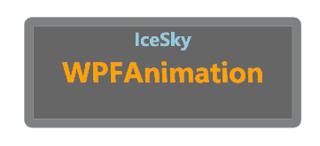
ShakeY：
<cfg:AnimationSetting UseMidSwing="True"
AnimationType="Double" TargetProperty="Y"
FromValue="-5" ToValue="5" Duration="1000"
AutoReverse="True" RepeatBehavior="4x"/>
Foreground：
<cfg:AnimationSetting
AnimationType="Color" TargetProperty="Foreground"
FromValue="Orange" ToValue="DodgerBlue" Duration="1000"/>
Background：
<cfg:AnimationSetting
AnimationType="Color" TargetProperty="Background"
FromValue="Orange" ToValue="Purple" Duration="1000"/>
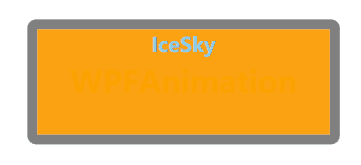
MarginGrow：
<cfg:AnimationSetting
AnimationType="Thickness" TargetProperty="Margin"
ByValue="10" Duration="1000"/>
BorderGrow：
<cfg:AnimationSetting
AnimationType="Thickness" TargetProperty="BorderThickness"
ByValue="10" Duration="1000"/>
Shadow：
<cfg:AnimationSetting
AnimationType="Double" TargetProperty="ShadowDirection"
FromValue="0" ToValue="360" Duration="1000"/>
Blur：
<cfg:AnimationSetting
AnimationType="Double" TargetProperty="Blur"
FromValue="0" ToValue="5" Duration="1000"/>
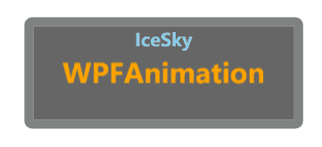
BounceIn：
<cfg:AnimationCollection>
<StaticResource ResourceKey="AS_BounceInX"/>
<StaticResource ResourceKey="AS_BounceInY"/>
</cfg:AnimationCollection>
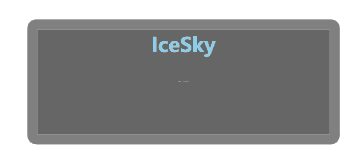
Pulse：
<cfg:AnimationCollection>
<StaticResource ResourceKey="AS_PulseX"/>
<StaticResource ResourceKey="AS_PulseY"/>
</cfg:AnimationCollection>
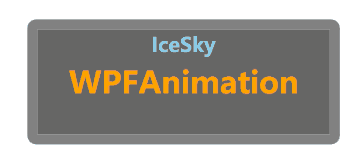
RotateIn：
<cfg:AnimationCollection>
<StaticResource ResourceKey="AC_ScaleIn"/>
<StaticResource ResourceKey="AS_RotateCW"/>
</cfg:AnimationCollection>
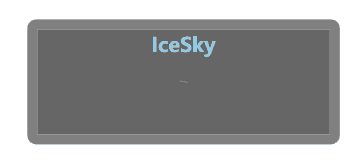
ScaleOut：
<cfg:AnimationCollection>
<StaticResource ResourceKey="AS_FadeOut"/>
<StaticResource ResourceKey="AC_ScaleOut"/>
</cfg:AnimationCollection>
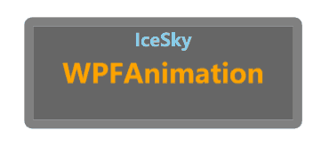
SwingIn：
<cfg:AnimationCollection>
<cfg:AnimationSetting BasedOn="{StaticResource AS_RotateCW}" FromValue="-10" ToValue="10" UseMidSwing="True" RepeatBehavior="3x" Duration="1000"/>
</cfg:AnimationCollection>
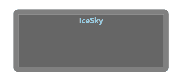
BackInDown：
<cfg:AnimationCollection>
<cfg:AnimationSetting BasedOn="{StaticResource AS_FadeIn}"/>
<cfg:AnimationSetting BasedOn="{StaticResource AS_MoveFromUp}"/>
<cfg:AnimationSetting BasedOn="{StaticResource AS_ScaleInX}" FromValue="1" ToValue="1.2"BeginTime="500"/>
<cfg:AnimationSetting BasedOn="{StaticResource AS_ScaleInY}" FromValue="1" ToValue="1.2"BeginTime="500"/>
</cfg:AnimationCollection>
SweepToRight：
<cfg:AnimationCollection>
<cfg:AnimationSetting BasedOn="{StaticResource AS_WidthGrow}" FromValue="0" ByValue="{x:Null}" AutoReverse="True" EasingType="SineEase"/>
<cfg:AnimationSetting BasedOn="{StaticResource AS_BackgroundColor}" FromValue="#038f" ToValue="#38f" AutoReverse="True"/>
</cfg:AnimationCollection>
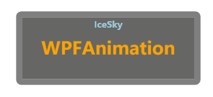
SpeedIn：
<cfg:AnimationCollection>
<cfg:AnimationSetting BasedOn="{StaticResource AS_MoveFromLeft}"/>
<cfg:AnimationSetting BasedOn="{StaticResource AS_SkewX}" FromValue="30" ToValue="0"/>
<cfg:AnimationSetting BasedOn="{StaticResource AS_SkewX}" FromValue="0" ToValue="-20"BeginTime="500" Duration="200"/>
<cfg:AnimationSetting BasedOn="{StaticResource AS_FadeIn}" Duration="300"/>
<cfg:AnimationSetting BasedOn="{StaticResource AS_SkewX}" FromValue="-20" ToValue="0" BeginTime="700" Duration="200"/>
</cfg:AnimationCollection>
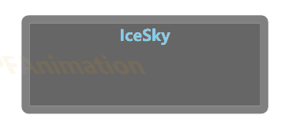
OutLine：
<cfg:AnimationCollection>
<cfg:AnimationSetting BasedOn="{StaticResource AS_BorderGrow}" FromValue="0" ToValue="5 0 0 0" Duration="200"/>
<cfg:AnimationSetting BasedOn="{StaticResource AS_BorderGrow}" FromValue="5 0 0 0" ToValue="5 5 0 0" Duration="200" BeginTime="200"/>
<cfg:AnimationSetting BasedOn="{StaticResource AS_BorderGrow}" FromValue="5 5 0 0" ToValue="5 5 5 0" Duration="200" BeginTime="400"/>
<cfg:AnimationSetting BasedOn="{StaticResource AS_BorderGrow}" FromValue="5 5 5 0" ToValue="5" Duration="200" BeginTime="600"/>
</cfg:AnimationCollection>

数字动画文本控件
数字动画文本控件实现了数值平滑过渡动画：当目标数值发生变化时，数字会从旧值自动平滑递增/递减到新值，支持自定义动画时长与数值显示格式
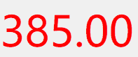
使用方法
添加命名空间
xmlns:control="clr-namespace:IceSky.WpfAnimation.Controls;assembly=IceSky.WpfAnimation"使用控件
<control:AnimatedNumber AnimationDuration="1000" TargetValue="{Binding Text}"/>参数说明（参数都支持数据绑定）
- TargetValue：目标值
- AnimationDuration：动画时长（毫秒）
- NumberFormat：默认格式为“F0”，支持C: 货币格式、E: 科学计数法、F: 固定点格式、N: 数字格式，格式后可以加数字表示小数位数
- EasingPower：动画缓动强度（值越大，收尾越慢），范围1~7
连续路径动画控件
连续路径支持将任意控件沿一条或多条路径连续进行运动，组合路径支持自动切分功能
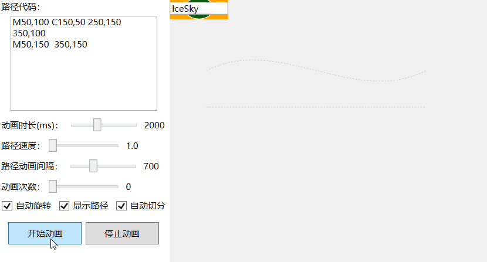
使用方法
添加命名空间
xmlns:control="clr-namespace:IceSky.WpfAnimation.Controls;assembly=IceSky.WpfAnimation"使用控件
<control:PathAnimationControl AnimationDuration="2000" PathData="{Binding Text}" > <!--需要沿路径运动的控件代码--> ……… </control:PathAnimationControl>参数说明（参数都支持数据绑定）
- PathData：路径代码，支持单条路径的PathData和GeometryGroup，GeometryGroup设置方法：
<control:PathAnimationControl.PathData> <GeometryGroup> <PathGeometry Figures="M50,100 C150,50 250,150 350,100"/> <PathGeometry Figures="M50,150 L150,150"/> <PathGeometry Figures="M50,200 A150,50 0 1 1 350,200"/> </GeometryGroup> </control:PathAnimationControl.PathData> - AnimationDuration：路径动画时长（毫秒），如果自动切分就是每段路径的动画时长
- PathSpeed：路径速度，在路径动画时长为0时有效，值越大速度越快，最小值为1
- PathDelay：多段路径间的间隔时间（毫秒），如果只有一条路径就是循环动画的间隔时间
- AutoRotate：沿路径运动时是否自动旋转角度
- RepeatCount：动画循环次数，值为0表示无限循环
- ShowPath：是否显示路径，默认为false，表示不显示
- SplitFigures：是否自动切分路径，如果路径代码是GeometryGroup将会自动按其中的Children自动切分，否则根据此参数设置来判断是否切分其中的Figures
- PathData：路径代码，支持单条路径的PathData和GeometryGroup，GeometryGroup设置方法：
动画控制方法
- StartAnimation：启动动画
- StopAnimation：停止动画
变形动画控件
此控件实现了两个或一组形状的自动补间动画，支持使用路径定义形状，以及指定动画方向
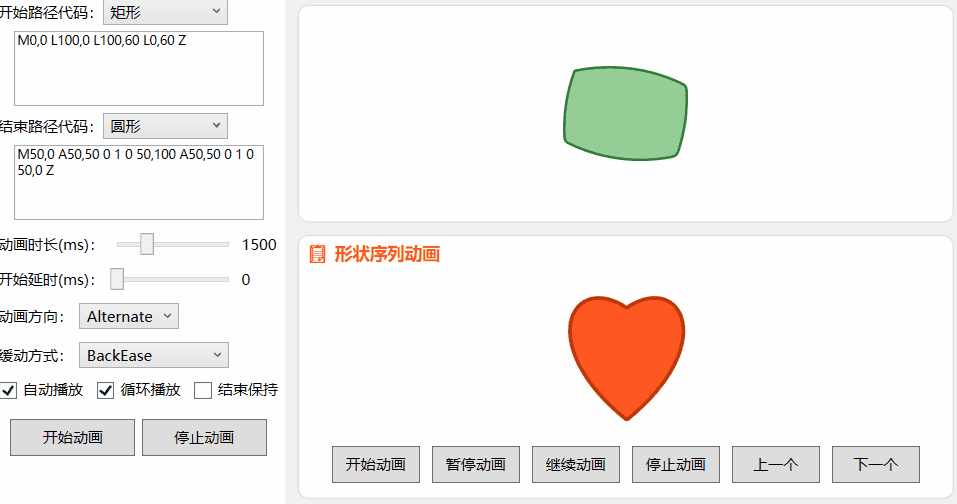
使用方法
添加命名空间
xmlns:control="clr-namespace:IceSky.WpfAnimation.Controls;assembly=IceSky.WpfAnimation"使用控件
<control:GeometryMorphControl FromGeometry="{Binding From}" ToGeometry="{Binding To}"/>参数说明（参数都支持数据绑定）
FromGeometry：起始形状
ToGeometry：结束形状
AutoPlay：是否在加载后自动播放动画，默认false
IsLooping：是否循环动画，默认false
AnimationDirection：动画方向，可以指定Forward（正向，默认）、Reverse（反向）、Alternate（交替）
HoldEnd：动画停止时是否保持结束形状
BeginTime：动画开始时的延时时间（毫秒），设置循环动画和多个形状动画间的间隔时间
AnimationDuration：一次动画的时长（毫秒）
Fill：设置形状填充
Stroke：设置形状描边
StrokeThickness：设置描边宽度
EasingFunction：设置动画的缓动函数
GeometryList：设置形状列表，在Xaml文件中可以使用资源进行定义：
<x:Array x:Key="StandardShapes" Type="{x:Type sys:String}"> <sys:String>M0,0 L100,0 L100,100 L0,100 Z</sys:String> <sys:String>M50,0 A50,50 0 1 0 50,100 A50,50 0 1 0 50,0 Z</sys:String> </x:Array>之后在控件中使用资源
<control:GeometryMorphControl GeometryList="{StaticResource StandardShapes}"/>
动画控制方法
- StartMorphAnimation：启动单独的形变动画
- StopAllAnimations：停止所有动画
- StartPlayList：启动列表连续动画
- PauseAnimation：暂停动画
- ResumeAnimation：恢复动画
- Previous：切换到列表中的上一个图形
- Next：切换到列表中的下一个图形
粒子动画控件
这是一个具有大量参数的通用粒子动画控件，支持设置粒子模板、轮廓形状、多种运动方式和动画效果
使用方法
添加命名空间
xmlns:control="clr-namespace:IceSky.WpfAnimation.Controls;assembly=IceSky.WpfAnimation"使用控件
<control:ParticleVisualHost ParticleCount="100"/>参数说明（参数都支持数据绑定）
- ParticleCount：粒子数量
- ParticleShape：内置粒子形状，包括Circle（圆形，默认）、Square（正方形）、Triangle（三角形）
- ParticleTemplate：指定粒子模板，默认为null，表示使用内置粒子形状，可以使用DataTemplate定义粒子模板，使用自定义模板将更加耗费资源，所以粒子数量应该减少
- ContourPath：粒子区域轮廓形状路径，默认为null，表示使用默认的圆形轮廓，可以使用Geometry定义轮廓路径
- DurationSeconds：粒子持续时间（秒）
- MinParticleSize：最小粒子尺寸
- MaxParticleSize：最大粒子尺寸
- SpawnPosition：粒子生成位置，可选Center（中心，默认）、Surround（外部）、EvenlyDistributed（平均分布）、Line（直线）
- MoveDirection：粒子运动方向，可选ToSurround（四周扩散，默认）、ToCenter（中心聚拢）、SpecifiedDirection（指定方向平移）、Rotation（旋转）、ScatterFrom（从指定方向发散）、GatherTo（向指定方向聚拢）
- MoveSpeedMin：粒子最小运动速度
- MoveSpeedMax：粒子最大运动速度
- AnimationDistance：粒子运动距离，此设置和粒子速度及粒子持续时间有关，如果粒子过早消亡的话就无法达到此距离，值为0时粒子运动距离将由时间和速度决定
- IsCollisionEnabled：是否启用碰撞反弹，开启后到达容器边缘会发生碰撞并进行反弹
- IsAutoAnimation：是否自动开始动画
- IsContinuous：是否连续动画，开启后粒子会持续生成
- IsInfiniteLoop：是否无限循环，开启后动画将无限循环，否则只播放一次，默认为true
- InnerRangeSize：中心范围尺寸，中心生成粒子时的边界
- OuterRangeSize：外部范围尺寸，外部生成粒子时的边界
- ParticleHorizontalAlignment：粒子区域的水平对齐方式
- ParticleVerticalAlignment：粒子区域的垂直对齐方式
- SpawnOffsetX：生成点在X方向的偏移距离
- SpawnOffsetY：生成点在Y方向的偏移距离
- MinColor：生成粒子中的颜色最小值
- MaxColor：生成粒子中的颜色最大值，最小值和最大值相同可以生成纯色
- MinOpacity：粒子的最小不透明度
- MaxOpacity：粒子的最大不透明度
- ScaleStart：粒子生成时的缩放比例
- ScaleEnd：粒子消亡时的缩放比例
- ScaleSpeedFactor：缩放速度因子，值越大变化越慢
- XJitterRange：X方向抖动范围
- YJitterRange：Y方向抖动范围
- JitterSpeed：抖动速度因子，值越大抖动越快，范围会变小
- IsFixedRotationCenter：整体旋转时是否固定旋转中心，默认不固定，绕界面中心进行旋转，否则可以设置GlobalRotationCenterX和GlobalRotationCenterY来指定旋转中心
- GlobalRotationSpeed：整体旋转速度，值越大旋转越快，默认为0不会进行整体旋转
- 根据运动方向不同可以设置不同的运动参数
- 方向设置为旋转时可以设置RotateAngularSpeed（旋转角速度，值越大速度越快）和IsClockwise（旋转方向，默认为true顺时针）
- 方向设置为平移时可以设置SpecifiedDirectionAngle（平移方向，值为整数表示角度：0向右，90向下，180向左，270向上）
- 方向设置为指定发散和指定聚拢时可以设置ManualTargetX（指定位置X坐标）和ManualTargetY（指定位置Y坐标）
- 生成位置指定为直线时可以设置LineLength（直线长度）和LineAngle（直线角度：0为水平，90为垂直）
动画控制方法
- StartAnimation：开始动画
- StopAnimation：停止动画
下雪效果：
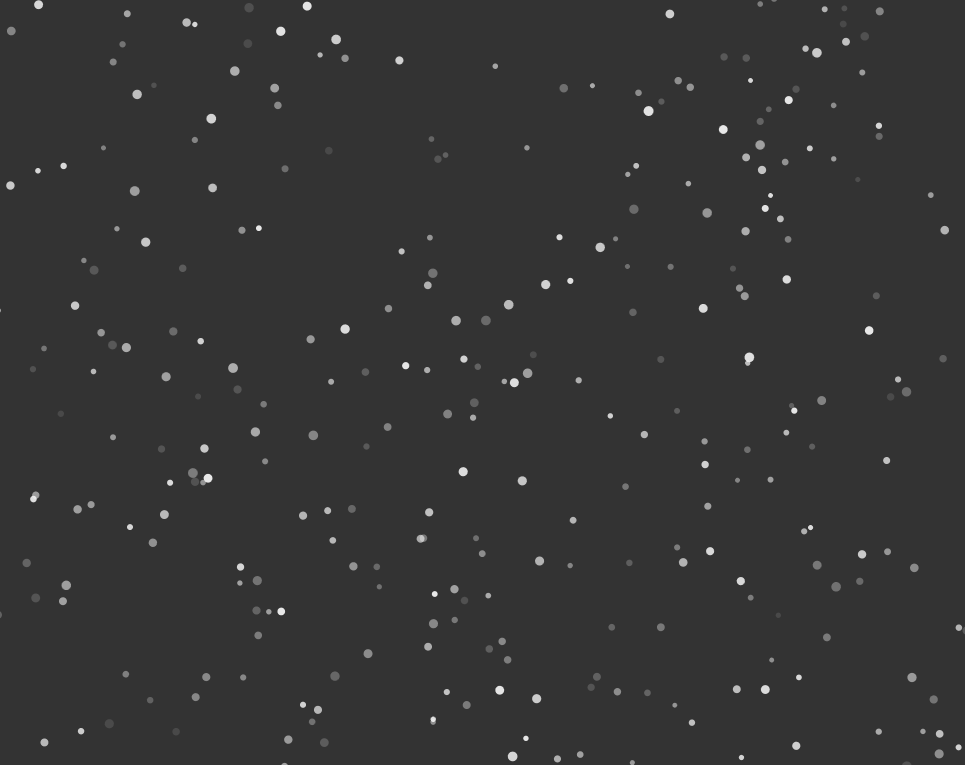
星空效果：
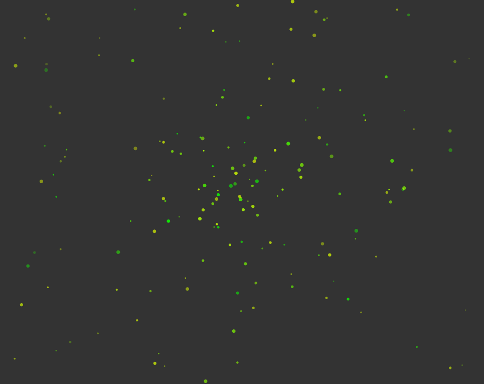
自定义轮廓及五角星元素：
自定义轮廓及三角形元素：
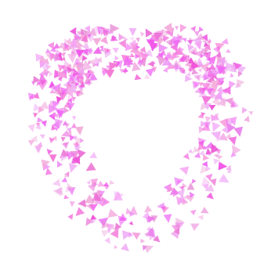
路径流动动画控件
这是一个可以实现任意控件按指定路径进行流动的动画控件，可以指定元素模板和流动方向
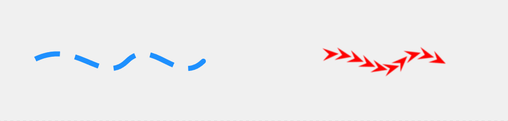
使用方法
添加命名空间
xmlns:control="clr-namespace:IceSky.WpfAnimation.Controls;assembly=IceSky.WpfAnimation"使用控件
<control:PathFlowControl Data="{Binding Text}"/>参数说明（参数都支持数据绑定）
- Data：路径数据
- Stroke：路径描边，ElementTemplate为null时有效
- StrokeThickness：路径宽度，ElementTemplate为null时有效
- StrokeDashArray：虚线样式，ElementTemplate为null时有效
- StrokeDashOffset：虚线偏移，ElementTemplate为null时有效
- StrokeStartLineCap：路径起始端点样式，可以指定圆角、平角、倒角等
- StrokeEndLineCap：路径结束端点样式，可以指定圆角、平角、倒角等
- AnimationSpeed：动画周期(秒)
- Direction：动画方向，可以设置Forward（正向，默认）、Reverse（反向）、Alternate（交替）
- IsLoop：是否循环播放，默认为true，值为false时只运行一次
- ElementTemplate：自定义元素模板，默认为null，使用虚线设置显示动画，可以使用DataTemplate设置元素模板
- ElementCount：自定义元素数量，设置了ElementTemplate后有效
- ElementSpacingRatio：自定义元素间距比例，=1时元素间距为0紧挨，<1时元素间会有重叠，>1时元素间有空白间距
- ShowPathOutline：是否显示路径轮廓
- FlowProgress：读取及设置动画进度
动画控制方法
- StartAnimation：开始动画
- StopAnimation：停止动画
- PauseAnimation：暂停动画
- ResumeAnimation：恢复动画
进度控制示例：
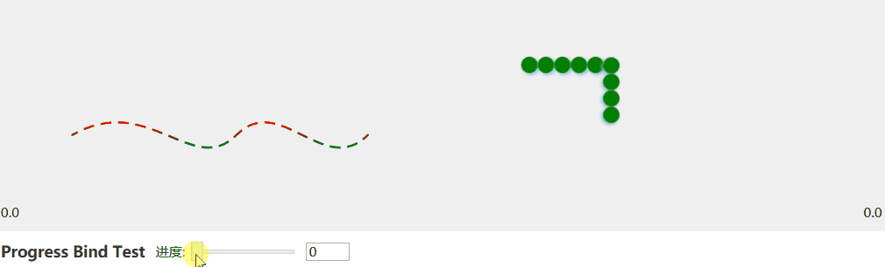
网格动画控件
这是一个对网格布局元素进行动画的控件，支持自定义网格元素样式、布局、动画参数，也可以自定义动画函数
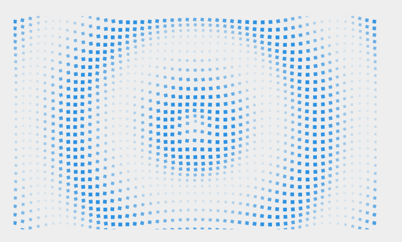
使用方法
添加命名空间
xmlns:control="clr-namespace:IceSky.WpfAnimation.Controls;assembly=IceSky.WpfAnimation"使用控件
<control:GridElementControl RowCount="10" ColumnCount="10"/>参数说明（参数都支持数据绑定）
RowCount：网格行数
ColumnCount：网格列数
ElementWidth：元素宽度
ElementHeight：元素高度
HorizontalSpacing：水平间距
VerticalSpacing：垂直间距
RowOffsetStep：水平方向偏移量
ColumnOffsetStep：垂直方向偏移量
ContainerPath：容器路径，可以使用Geometry指定轮廓形状
FillElementTemplateConfig：容器内元素样式
- 定义元素样式需要添加引用
xmlns:model="clr-namespace:IceSky.WpfAnimation.Models;assembly=IceSky.WpfAnimation"- 自定义样式示例
<control:GridElementControl.FillElementTemplateConfig> <model:ElementTemplateConfig ShapeType="Rectangle"> <model:ElementTemplateConfig.ElementStyle> <Style TargetType="Shape"> <Setter Property="Fill" Value="#2A90E2"/> </Style> </model:ElementTemplateConfig.ElementStyle> </model:ElementTemplateConfig> </control:GridElementControl.FillElementTemplateConfig>BackgroundElementTemplateConfig：超出容器的元素样式，定义容器路径后有效
Animation：动画类型，可以使用继承自GridAnimation的自定义动画，动画参数包括：
- Duration：动画周期（秒）
- IsLoop：是否循环
- MaxScale：元素的最大缩放值
- MinScale：元素的最小缩放值
- MinOpacity：元素的最小不透明度
- ItemRotateSpeed：元素每秒旋转的角度
- CenterX：元素变换时使用的RenderTransformOrigin的X参数，范围0~1
- CenterY：元素变换时使用的RenderTransformOrigin的Y参数，范围0~1
AutoStartAnimation：是否自动开始
AnimationCenterX：动画中心的X坐标，值为中心所在列号
AnimationCenterY：动画中心的X坐标，值为中心所在行号
控制方法
- StartAnimation：开始动画，参数为需要执行的动画对象
- StopAnimation：停止动画
- PauseAnimation：暂停动画
- ResumeAnimation：恢复动画
定义动画
控件库中包含了多个预定义的网格动画，每种动画都有多个参数可以设置，比如：- CircleWaveAnimation：环形波浪动画，可以设置波浪速度和波浪振幅
- SineWaveAnimation：正弦曲线动画，可以设置波浪间距、错位距离和波浪振幅
- ShockwaveAnimation：冲击波动画，可以设置冲击波宽度
- PerspectiveWaveAnimation：透视波浪动画，可以设置波浪速度、透视强度和波浪振幅
- ScanLineAnimation：扫描线动画，可以设置扫描线数量、扫描线宽度、旋转角度和是否交叉
- PolygonPulseAnimation：形状脉冲动画，可以设置脉冲形状、脉冲数量、脉冲宽度、是否旋转和旋转方向
- SpiralRotateAnimation：螺旋形旋转动画，可以设置螺旋线数量、宽度、间距、旋转中心半径和旋转方向
- RadiationRayAnimation：发散射线动画，可以设置射线数量、宽度、虚线间隔、旋转速度和方向
控件支持使用自定义动画，自定义动画时需要继承 GridAnimation，并实现以下步骤：
- 重写抽象方法 GetElementParams，在此方法中返回 GridAnimationParams 类型的动画参数，包括：ScaleX、ScaleY、Offset、Opacity及Rotation角度，此方法会在每帧更新时对参数指定坐标的元素应用变换。可以使用Progress（动画执行的累计进度）或者_totalElapsedTime（动画累计运行时间（秒））在方法中进行运算
- 根据需要实现自定义属性
- 在此控件的使用代码中实例化动画对象并作为参数传递给开始动画的方法
扫描线动画：
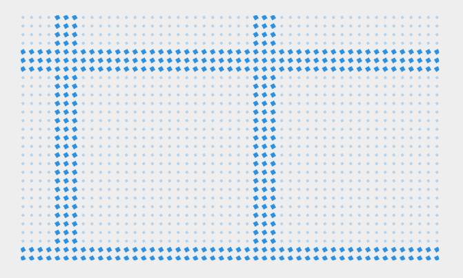
方形旋转脉冲动画：
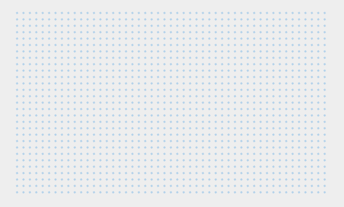
X交叉脉冲动画：
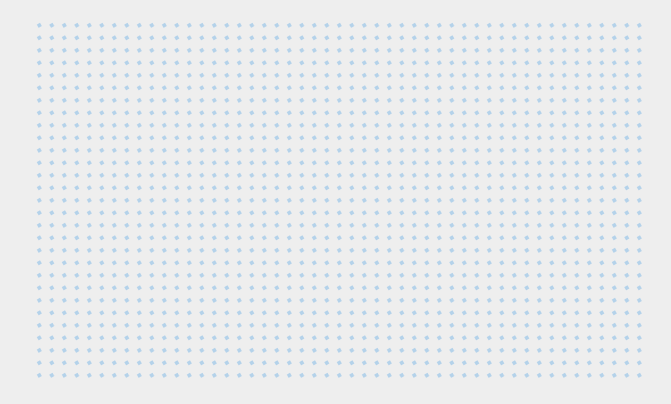
螺旋线动画：
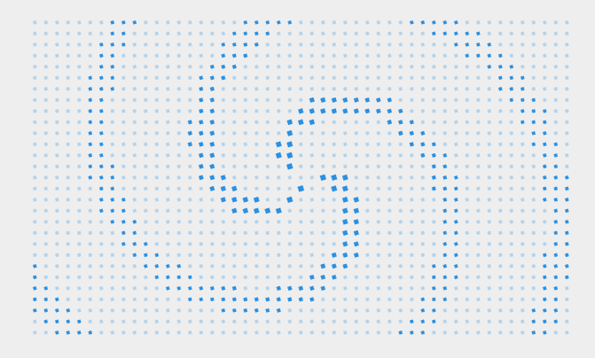
发散射线动画：
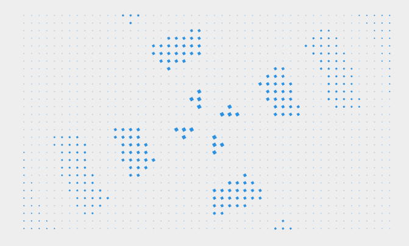
水平波浪动画：
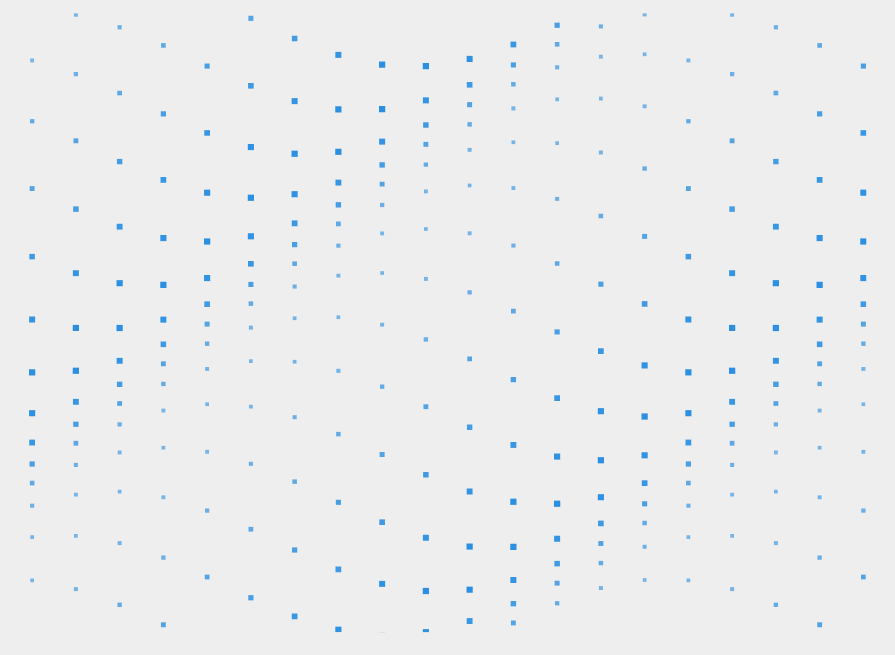
多元素动画
多元素动画包含AnimatedPanel和列表动画两种方式，AnimatedPanel可以通过指定PanelAnimations为通用动画组件对panel中的多个控件元素进行动画，列表动画可以指定ItemsPanelTemplate为AnimatedPanel或者在ItemTemplate中对列表元素添加通用动画组件来实现
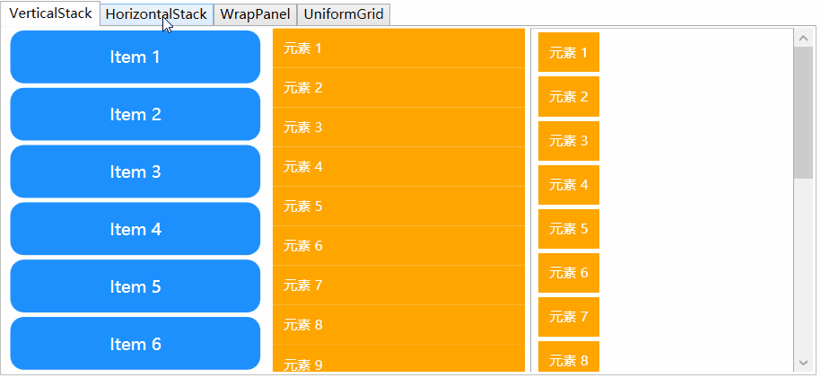
使用方法
添加命名空间
xmlns:control="clr-namespace:IceSky.WpfAnimation.Controls;assembly=IceSky.WpfAnimation" xmlns:cfg="clr-namespace:IceSky.WpfAnimation.Models;assembly=IceSky.WpfAnimation"使用控件
<!--AnimatedPanel--> <ctrl:AnimatedVerticalStackPanel x:Name="panelW" RenderTransformOrigin=".5 .5" AnimationDelay="50"> <ctrl:AnimatedVerticalStackPanel.PanelAnimations> <cfg:AnimationCollection> <StaticResource ResourceKey="AC_ScaleFadeIn"></StaticResource> </cfg:AnimationCollection> </ctrl:AnimatedVerticalStackPanel.PanelAnimations> </ctrl:AnimatedVerticalStackPanel> <!--ItemTemplate--> <ListBox.ItemTemplate> <DataTemplate> <TextBlock Text="{Binding}" cfg:AnimatedElement.Trigger="VisibleChanged" cfg:AnimatedElement.AnimationDelay="50"> <cfg:AnimatedElement.Animations> <cfg:AnimationCollection> <cfg:AnimationSetting BasedOn="{StaticResource AS_MoveFromLeft}" FromValue="-10"/> <cfg:AnimationSetting BasedOn="{StaticResource AS_FadeIn}" Duration="500"/> </cfg:AnimationCollection> </cfg:AnimatedElement.Animations> </TextBlock> </DataTemplate> </ListBox.ItemTemplate>参数说明
- AnimatedPanel包括AnimatedVerticalStackPanel（垂直StackPanel）、AnimatedHorizontalStackPanel（水平StackPanel）、AnimatedWrapPanel、AnimatedUniformGrid等类型，参数包括PanelAnimations（指定通用动画组件）、AnimationDelay（每个元素动画的延迟时间，单位毫秒）、AnimatedOnScrollChanged（是否在滚动条改变时进行动画）
- 在ItemTemplate中对列表元素添加通用动画组件时可以使用cfg:AnimatedElement.AnimationDelay来设置各元素间的动画延迟（单位毫秒），将cfg:AnimatedElement.Trigger设置为VisibleChanged可以在每次显示时进行动画